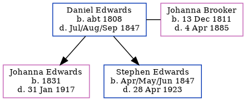

Daniel Edwards c1808 - 1847
[ Home ] | [ Calendar ] | [ Surnames Index ] | [ Census Index ] | [ Family History ]A laborer, Daniel Edwards, the 3 times great-grandfather of Nigel Horne, was born in Kent, England c. 18081 and married Johanna Brooker (a pauper char woman with whom he had 2 children: Johanna Brooker and Stephen) at St Mary the Virgin Church, Minster, Thanet, Kent on Sep 18, 18293 (St. MarysKFHS CD34). In 1841, he was living in St Lawrence, Thanet, Kent1.
He died in Jul/aug/sep 1847 in Thanet, Kent, England2 and was buried St Lawrence in Thanet on Aug 18, 18474.
Children
- Johanna Brooker was born in 1831
- Stephen was born in Apr/may/jun 1847
Citations
- 1841 England Census Online publication - Provo, UT, USA: The Generations Network, Inc., 2006.Original data - Census Returns of England and Wales, 1841. Kew, Surrey, England: The National Archives of the UK (TNA): Public Record Office (PRO), 1841. Data imaged from the National
- England & Wales, FreeBMD Death Index: 1837-1915 Online publication - Provo, UT, USA: The Generations Network, Inc., 2006.Original data - General Register Office. England and Wales Civil Registration Indexes. London, England: General Register Office. © Crown copyright. Published by permission of the Cont
- Kent Marriages And Banns - Findmypast
- Familysearch.org (www.familysearch.org)
Family Tree
Generated by ged2site. Last updated on Jun 11, 2024